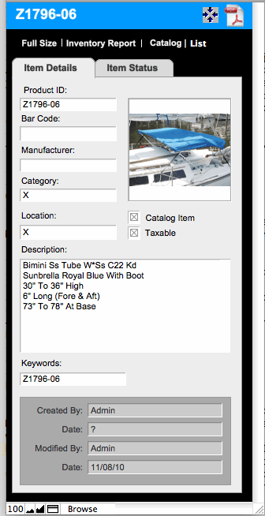

ShopKeeper-FMP multi-user (versions 11.2.22 up) now allows access from iOS devices (iPhone, iPod Touch [4], or iPad). Just get FileMaker GO from the iTunes App Store.
In ShopKeeper
1) Go to Inventory-> Scripts (menu)-> Update Mobile Inv. 2) It will ask if you want to include product costs. Normally you would say no.
3) Then it will ask if you want to do All or just the found Set. If you select All, then it will delete the current entries and create an all new records. If you choose Set, then it will update the entries in the current selected set of records. Note that changing something other than the ave. cost in the inventory record will automatically update the Mobile.fp7 Record for connected client iOS devices.
4) To get to the Mobile file go to Main Menu-> Scripts (menu)-> Mobile Inventory.

1) When you log in from the iPod you will have two choices MAIN and MOBILE. MOBILE is just the inventory stuff and loads much faster, the MAIN is to enter ShopKeeper normally.
2) Try out all the buttons. You cannot hurt anything.
3) Nothing automatically feeds back to the ShopKeeper inventory.
4)To get back to ShopKeeper, hit the company name, it is a button or hit the button icon with the four arrows.